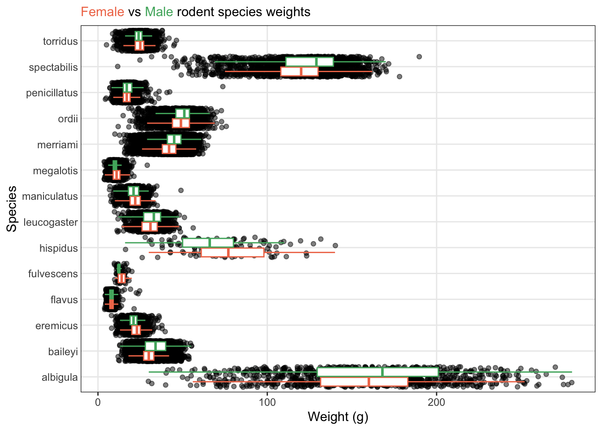
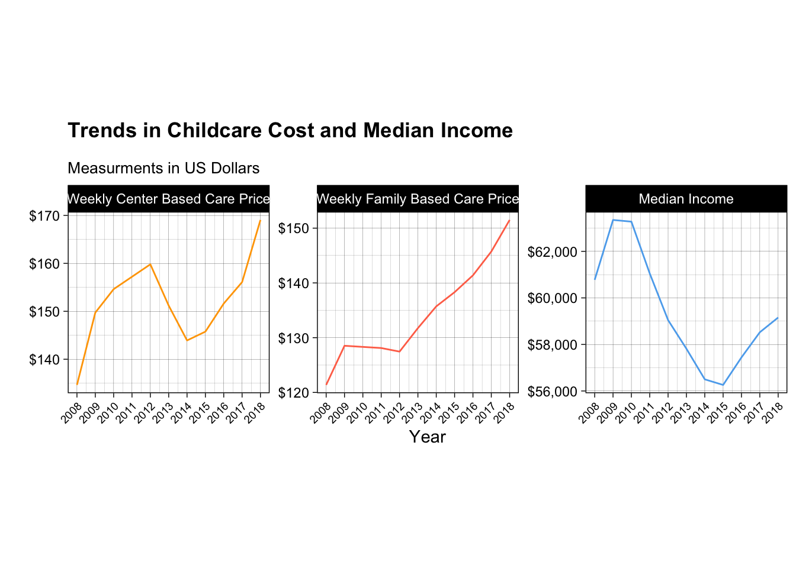

ggplot(data = surveys,
mapping = aes(x = species, y = weight)) +
geom_boxplot(outliers = FALSE) +
geom_jitter(color = "steel blue", alpha = 0.08) +
labs(title = "Distribution of Weight by Species Boxplot",
subtitle = "Vertical Orientation",
x = "Species Name", y = "Weight (g)") +
theme_bw() +
theme(axis.text.x = element_text(angle = 45),
axis.ticks.length.x = unit(8, "mm"),
axis.ticks.x = element_line(color = "white"),
panel.border = element_rect(color = "black", linewidth = 1),
plot.title = element_text(face = "bold"),
plot.subtitle = element_text(color = "steelblue"),
panel.grid.major.x = element_blank(),
panel.grid.minor.x = element_blank())Gallary of Exemplary Student Work
Challenge 2
Here are some of the exemplary assignments from your peers!
Themes
This code is brought to us by Jonathan Flores! I really appreciated the extensive themes they included and how these themes make the plot clearer to the reader.
Unique Colors
This code is brought to us by Fisher Fraley! I really appreciated how they found a unique color theme from a context they liked!
# Color Palette: https://color.adobe.com/TRON-color-theme-6970180/
tron_colors <- c("#DF7212", "#6FC3DF", "#E6FFFF", "#FFE64D", "#0C141F")
ggplot(data = surveys, aes(x = weight, y = species, color = sex)) +
geom_boxplot(outlier.shape = NA, width = 0.6) +
geom_jitter(width = 0.15, height = 0, alpha = 0.3, size = 1) +
scale_color_manual(values = tron_colors) +
theme(axis.text.x = element_text(angle = 45, hjust = 1, vjust = 1)) +
labs(
title = "Rodent Weight by Species",
subtitle = "Y-Axis = Rodent Species",
x = "Rodent Weight (g)",
y = NULL,
caption = "Source: Portal Project Database"
)Removing the Legend (and More)
This code is brought to us by Lucy Thackray! I thought it was special that Lucy stacked all three challenged to make a clean, easy to read plot.
colors <- c("#f07857", "#4fb06d" )
ggplot(data = surveys,
mapping = aes(x = weight, y = species)) +
geom_jitter( alpha = 0.5) +
geom_boxplot(outliers = FALSE, mapping = aes(color = sex)) +
labs(x = "Weight (g)", y = "Species", color = "Sex",
subtitle = "<span style = 'color:#f07857;'>Female</span> vs <span style = 'color:#4fb06d;'>Male</span> rodent species weights") +
theme_bw() +
theme(panel.grid.minor = element_blank()) +
theme(
legend.position = "none",
plot.subtitle = element_markdown()) +
theme(axis.ticks.y = element_blank()) +
scale_color_manual(values = colors)
Lab 3
across() + mutate()
This code is brought to us by a student who wishes to remain anonymous! What I appreciated about this code was the use of across() when converting multiple columns to numeric. I also loved their use of the most current syntax for the across() function!
teacher_evals_clean <- teacher_evals |>
rename(sex = gender) |>
mutate(teacher_id = as.character(teacher_id),
question_no = as.character(question_no),
across(
.cols = c(no_participants,
resp_share,
SET_score_avg,
percent_failed_cur,
seniority),
.fns = ~ as.numeric(.x)
)
)|>
filter(no_participants > 10) |>
select(course_id,
teacher_id,
question_no,
no_participants,
resp_share,
SET_score_avg,
percent_failed_cur,
academic_degree,
seniority,
sex)Confirming Unique Row Identification
This code is brought to us by Akshat Khandelwal! I thought it was very clever how Akshat played with different combinations of variables to confirm which combination uniquely identified a row.
teacher_question <- teacher_evals |>
distinct(teacher_id, question_no)
print(nrow(teacher_question) == nrow(teacher_evals)) # False[1] FALSEteacher_question_course <- teacher_evals |>
distinct(teacher_id, question_no, course_id)
print(nrow(teacher_question_course) == nrow(teacher_evals)) # True[1] TRUEcourse_question <- teacher_evals |>
distinct(question_no, course_id)
print(nrow(course_question) == nrow(teacher_evals)) # False[1] FALSEProportions in Demographic Table
This code is brought to us by Arturo Ordaz-Gutierrez! I really appreciated how Art added the proportions to this demographic table so it is easier to see the representation of each group.
teacher_evals_clean |>
distinct(teacher_id, .keep_all = TRUE) |>
count(academic_degree, sex) |>
mutate(percent = round(100 * n / sum(n), 1)) |>
arrange(desc(percent))# A tibble: 8 × 4
academic_degree sex n percent
<chr> <chr> <int> <dbl>
1 dr male 95 32.3
2 dr female 73 24.8
3 ma male 39 13.3
4 ma female 36 12.2
5 no_dgr female 24 8.2
6 no_dgr male 19 6.5
7 prof male 7 2.4
8 prof female 1 0.3across() + summarize()
This code is brought to us by Rachel Survilas! I loved how Rachel noticed they were using the same n_distinct() function across multiple columns and decided to use across()! Also, the syntax they are using is on point!
teacher_evals_clean |>
summarize(
across(
.cols = c(teacher_id, course_id),
.fns = ~ n_distinct(.x))
)# A tibble: 1 × 2
teacher_id course_id
<int> <int>
1 294 921Demographic Barplots with Annotations
This code is brought to us by a student who wishes to remain anonymous! I thought this code was great because they chose to visualize the teacher demographics! They even added annotations to the top of their barplots!
individuals <- teacher_evals_clean |>
group_by(teacher_id, sex, academic_degree, seniority) |>
summarise(n = n()) |>
ungroup()
individuals |>
group_by(sex) |>
summarise(n = n()) |>
ggplot(mapping = aes(x = sex, y = n)) +
geom_col() +
geom_text(aes(label = n), vjust = -0.5) +
labs(x = "Sex", y = "Count")
individuals |>
group_by(seniority) |>
summarise(n = n()) |>
ggplot(mapping = aes(x = seniority, y = n)) +
geom_col() +
geom_text(aes(label = n), vjust = -0.5) +
labs(x = "Seniority in Years", y = "Count")
individuals |>
group_by(academic_degree) |>
summarise(n = n()) |>
ggplot(mapping = aes(x = academic_degree, y = n)) +
geom_col() +
geom_text(aes(label = n), vjust = -0.5) +
labs(x = "Academic Degree Held", y = "Count")Slicing the Max & Min Together
This code is brought to us by a student who wishes to remain anonymous! I thought this code was great because they got both the maximum values and the minimum values in one pipeline. Very efficient!
teacher_evals_clean |>
filter(seniority == 1) |>
group_by(teacher_id) |>
summarize(
avg_rating = mean(percent_failed_cur, na.rm = TRUE),
.groups = "drop"
) |>
filter(
avg_rating == min(avg_rating)|
avg_rating == max(avg_rating)
) |>
arrange(avg_rating)# A tibble: 7 × 2
teacher_id avg_rating
<chr> <dbl>
1 102379 0
2 103092 0
3 106126 0
4 86222 0
5 98650 0
6 98651 0
7 106692 0.68Using kable() for Nicer Looking Tables
This code is brought to us by a student who wishes to remain anonymous! I appreciated that they read the instructions to use the kable() function to get nicer looking tables. The code is very simple, but the tables look much nicer!
percent_failed <- teacher_evals_clean |>
group_by(teacher_id) |>
filter(seniority == 1) |>
summarize(avg_percent_failed = mean(percent_failed_cur))
percent_failed |>
slice_min(avg_percent_failed) |>
kable()| teacher_id | avg_percent_failed |
|---|---|
| 102379 | 0 |
| 103092 | 0 |
| 106126 | 0 |
| 86222 | 0 |
| 98650 | 0 |
| 98651 | 0 |
Challenge 3
Hypothesis Test Conclusion
These statements are brought to us by Abel Alcala and Sebastien Montgrain! I really appreciated the context they infused into their hypothesis test conclusion!
Based on the results of the Chi-Squared test of Independence, we have a p-value of 0.006075 and a X^2 value of 10.207. Since the p-value is less than α = 0.05, we reject the null hypotheses indicating a statistically significant association between seniority level and SET evaluation results. This suggests that instructor experience across junior, senior, and very senior appears to influence how students perceive the use of engaging activities in class.
Because the p-value of our Chi-squared test of independence is less than 0.05 (0.006075), we know that there is an association between a teachers seniority and their SET scores from question 3 on if the professor used activities to make the class more engaging. Combining this Chi-squared test with the graph, we can see that more experienced teachers do a better job of implementing engaging activities is their classes.
Challenge 4
Amazing Tables
Amazing Plots
This plot is brought to us by Marietta Nikolskaya! I was really excited to see someone create a “lollipop” plot, since they are what we (Statisticians) make to compare how different a summary statistic is between groups. When plotting statistics like the mean, median, or difference, we generally advocate for this type of plot over a barplot since barplots are typically reserved for plots of counts or proportions.
Code
# Here is the data wrangling that happened to make this plot!
ca_childcare_new <- ca_childcare |>
filter(study_year == 2018) |>
select(census_region, mc_infant, mfcc_infant) |>
mutate(cost_difference = mc_infant - mfcc_infant) |>
group_by(census_region) |>
summarize(
median_center = median(mc_infant),
median_family = median(mfcc_infant),
median_difference = median(cost_difference)) |>
arrange(desc(median_difference))ca_childcare_new |>
ggplot(aes(y = fct_reorder(census_region, median_difference),
x = median_difference)) +
geom_segment(aes(yend = census_region, x = 0, xend = median_difference),
color = "gray50") +
geom_point(size = 4, color = "steelblue") +
labs(
y = "",
x = "Cost Difference: Center - Family ($)",
title = "Cost Difference Between Center and Family Childcare for Infants (2018)"
) +
theme_minimal()This plot is brought to us by Devin Hadley! I thought this plot was really creative in their use of a non-standard geometry (geom_ribbon()) to fill the space between the lines. I also appreciated that they moved the legend to the top of the plot to make it easier to see!
Code
# Here is the data wrangling that happened to make this plot!
summary_table <- ca_childcare |>
group_by(study_year) |>
summarise(
median_center_price = median(mc_infant),
median_family_price = median(mfcc_infant)
) |>
mutate(
center_minus_family_price = median_center_price - median_family_price
)
summary_table_long <- summary_table |>
pivot_longer(
cols = c("median_center_price", "median_family_price"),
names_to = "care_type",
values_to = "median_price"
) |>
mutate(
care_type = case_when(
care_type == "median_center_price" ~ "Center-Based",
care_type == "median_family_price" ~ "Family-Based",
TRUE ~ care_type
))ggplot(summary_table_long, aes(x = study_year, y = median_price, color = care_type)) +
geom_line(linewidth = 1.2) +
geom_point(size = 3) +
geom_ribbon(data = summary_table, aes(x = study_year, ymin = median_family_price, ymax = median_center_price, group = 1),
fill = "skyblue", alpha = 0.3, inherit.aes = FALSE) +
labs(
title = "Median Weekly Infant Childcare Costs in California (2008-2018)",
subtitle = "Based off the aggregated median price for each care type on an annual basis in various California counties.",
x = "Year",
y = "Median Weekly Price (2018 Dollars)",
color = "Type of Childcare"
) +
scale_x_continuous(breaks = seq(2008, 2018, by = 2)) +
theme_minimal(base_size = 14) +
theme(
legend.position = "top",
plot.title = element_text(face = "bold"),
plot.subtitle = element_text(margin = margin(b = 10)),
axis.title = element_text(face = "bold"),
plot.background = element_rect(color = "black", linewidth = 1)
)This plot is brought to us by Haley Wong! Haley also featured a non-standard geometry (geom_ribbon()) to fill the space between the lines on this plot! I really appreciated Haley’s attention to detail in making titles and labels on the plot that made the context very clear to the reader—$ on the y-axis labels and a subtitle explaining what the gap represents.
Code
# Here is the data wrangling that happened to make this plot!
table <- ca_childcare |>
pivot_longer(
cols = mc_infant:mfcc_preschool,
names_to = "type_age",
values_to = "median_price"
) |>
mutate(
type = case_when(
str_detect(type_age, "^mc_") ~ "center_based",
str_detect(type_age, "^mfcc_") ~ "family"
),
age = case_when(
str_detect(type_age, "infant$") ~ "infant",
str_detect(type_age, "toddler$") ~ "toddler",
str_detect(type_age, "preschool$") ~ "preschool"
)
) |>
group_by(study_year, age, type) |>
summarise(median_price = median(median_price, na.rm = TRUE), .groups = "drop") |>
pivot_wider(names_from = type, values_from = median_price) |>
mutate(difference = center_based - family)
prices_long <- table |>
pivot_longer(
cols = c(center_based, family),
names_to = "setting_type",
values_to = "median_price"
) |>
mutate(
setting_label = fct_recode(
setting_type,
"Center-based" = "center_based",
"Family (In-home)" = "family"
),
age = factor(age, levels = c("infant", "toddler", "preschool"))
)ggplot(prices_long, aes(x = study_year, y = median_price, color = setting_label)) +
geom_ribbon(
data = table |>
mutate(age = factor(age, levels = c("infant", "toddler", "preschool"))),
aes(x = study_year, ymin = family, ymax = center_based, fill = "Price Gap"),
alpha = 0.15,
inherit.aes = FALSE
) +
geom_line(size = 1.2) +
geom_point(size = 2.5, alpha = 0.9) +
facet_wrap(~ age, nrow = 1) +
scale_color_brewer(palette = "Set1") +
scale_fill_manual(values = c("Price Gap" = "gray70")) +
scale_y_continuous(labels = scales::label_dollar()) +
scale_x_continuous(breaks = seq(2008, 2018, 4)) +
labs(
title = "Center-Based vs Family Childcare Costs Over Time",
subtitle = "Shaded area shows median price gap by age group (California)",
x = "Study Year",
y = "Median Weekly Price (USD)",
color = "Care Setting",
fill = ""
) +
theme_minimal(base_size = 14) +
theme(
plot.title = element_text(face = "bold", size = 16, hjust = 0.5),
plot.subtitle = element_text(size = 13, hjust = 0.5),
axis.text.x = element_text(size = 10),
legend.position = "right"
)This plot is brought to us by Isaiah Woodard! I really appreciated how Isaiah took the skills they learned in Challenge 2 and applied them to a new setting!
Code
# Here is the data wrangling that happened to make this plot!
plot_data <- ca_childcare %>%
select(census_region, study_year, mfccsa, mcsa) %>%
filter(study_year == c("2008":"2018")) %>%
group_by(census_region, study_year) %>%
summarise(median_mcsa = median(mcsa),
median_mfccsa = median(mfccsa)) %>%
pivot_longer(cols = c(median_mcsa, median_mfccsa),
names_to = "category",
values_to = "medians")In a similar setting, Lucy also took the ideas from Challenge 2 and applied them to make an exciting plot!
Code
# Here is the data wrangling that happened to make this plot!
challenge <- ca_childcare |>
rename(CenterBased = mcsa,
Family = mfccsa) |>
pivot_longer(cols = CenterBased:Family,
names_to = "type_of_care",
values_to = "Median_price")colors <- c("#6C88C4", "#FF828B")
challenge |>
mutate(year = as.factor(study_year)) |>
ggplot(mapping = aes(x = year,
y = Median_price,
color = type_of_care)) +
theme_bw() +
geom_jitter (alpha = 0.5, aes(color = type_of_care), show.legend = FALSE) +
geom_boxplot(outliers = FALSE) +
labs(x = "Study Year",
y = "",
color = "Type of Childcare",
subtitle = "Weekly Median Price ($) for <span style = 'color:#6C88C4;'>Center Based</span> vs <span style = 'color:#FF828B;'>Family</span> Childcare") +
scale_color_manual(values = colors) +
theme(legend.position = "none",
plot.subtitle = element_markdown(),
panel.grid.major.x = element_blank()) 
plot_data %>%
ggplot(aes(x = study_year,
y = medians,
color = category)) +
facet_wrap(~ census_region) +
geom_point() +
scale_x_continuous(breaks = c(2008, 2010, 2012, 2014, 2016, 2018)) +
labs(title = "Price of Childcare Over Time in California",
subtitle = "Plots subdivided for <span style='color:#009e73;'>center-based</span> and <span style='color:#d55e00;'>at-home</span> childcare",
x = "Study Year",
y = "Median Weekly Cost of Childcare ($)") +
scale_color_manual(values = c("#009e73", "#d55e00")) +
theme_bw() +
theme(plot.subtitle = ggtext::element_markdown(),
axis.text = element_text(size = 5),
legend.position = "")This plot is brought to us by Rayan Tahir! I thought Rayan’s plot was very clear and easy to understand. Moreover, their use of $ on the axis labels and moving the legend to the top of the plot made it even easier to understand what was being plotted.
Code
# Here is the data wrangling that happened to make this plot!
ca_afford <- ca_childcare |>
mutate(
weekly_income = mhi_2018 / 52,
center_afford = mc_infant / weekly_income,
family_afford = mfcc_infant / weekly_income
)
ca_afford_long <- ca_afford |>
select(study_year, center_afford, family_afford) |>
pivot_longer(
cols = c(center_afford, family_afford),
names_to = "Setting",
values_to = "Affordability"
) |>
mutate(
Setting = recode(Setting,
center_afford = "Center-Based",
family_afford = "Family-Based")
)ggplot(ca_afford_long, aes(x = study_year, y = Affordability, color = Setting)) +
stat_summary(fun = median, geom = "line", linewidth = 1.2) +
stat_summary(fun = median, geom = "point", size = 2.2) +
scale_y_continuous(labels = scales::label_percent(accuracy = 1)) +
labs(
title = "Affordability of Childcare in California (2008-2018)",
subtitle = "Median Weekly Cost as a Share of County Median Household Income",
x = "Year",
y = "Median Share of Weekly Income Spent on Infant Care",
color = "Childcare Setting"
) +
theme_minimal(base_size = 11) +
theme(
plot.title = element_text(face = "bold", size = 15, hjust = 0.5),
plot.subtitle= element_text(size = 12, hjust= 0.5),
legend.position = "top"
)This plot is brought to us by a student who wishes to remain anonymous. I thought this plot was both incredibly clear and rather creative. They used a non-standard geom (geom_violin) which shows the density of each group’s distribution. Moreover, they plot a horizontal line at the median and annotate the median value (with dollar signs!).
Code
# Here is the data wrangling that happened to make this plot!
plot_data <- ca_childcare |>
select(mc_infant, mc_toddler, mc_preschool,
mfcc_infant, mfcc_toddler, mfcc_preschool) |>
pivot_longer(
cols = everything(),
names_to = "age_group",
values_to = "weekly_price"
) |>
mutate(
age_group = recode(
age_group,
mc_infant = "Center_Infant",
mc_toddler = "Center_Toddler",
mc_preschool = "Center_Preschool",
mfcc_infant = "Family_Infant",
mfcc_toddler = "Family_Toddler",
mfcc_preschool = "Family_Preschool"
),
setting = if_else(str_detect(age_group, "Center"), "Center-Based", "Family (In-Home)"),
age_group = case_when(
str_detect(age_group, "Infant") ~ "Infant",
str_detect(age_group, "Toddler") ~ "Toddler",
str_detect(age_group, "Preschool") ~ "Preschool"
),
age_group = fct_relevel(age_group, "Infant", "Toddler", "Preschool")
)library(RColorBrewer)
custom_colors <- colorRampPalette(brewer.pal(8, "Accent"))(10)
ggplot(plot_data, aes(x = age_group, y = weekly_price, fill = age_group)) +
geom_violin(trim = TRUE, alpha = 0.8, linewidth = 0.5) +
stat_summary(fun = median, fun.min = median, fun.max = median,
geom = "errorbar", width = 0.45, color = "black", linewidth = 0.5) +
stat_summary(fun = median, geom = "text",
aes(label = scales::dollar(after_stat(y))),
vjust = -0.6, size = 3, color = "black") +
facet_wrap(~ setting, ncol = 2) +
scale_y_continuous(labels = scales::dollar) +
scale_fill_manual(values = custom_colors) +
scale_color_manual(values = custom_colors) +
labs(
title = "Distribution of Full-Time Weekly Childcare Costs in California (2008–2018)",
subtitle = "Violin shows distribution shape; bold line and label mark the median",
x = "Age Group of Children",
y = "Full-Time Weekly Cost"
) +
theme_minimal() +
theme(
legend.position = "none",
panel.border = element_rect(color = "grey60", fill = NA, linewidth = 0.7),
strip.background = element_rect(fill = "grey95", color = "grey70"),
plot.title = element_text(face = "bold", size = 15),
plot.subtitle = element_text(face = "italic", color = "grey30"),
axis.title = element_text(face = "bold"),
axis.line = element_line(color = "grey60"),
panel.grid.minor = element_blank()
)
This plot is brought to us by Sebastien Montgrain! I really appreciated all the effort Sebastien put into getting the themes for the plot to be as clean as possible!
Code
# Here is the data wrangling that happened to make this plot!
clean_data <- counties |>
left_join(childcare_costs, join_by(county_fips_code)) |>
filter(state_name == "California") |>
group_by(study_year) |>
summarise(mcsa = median(mcsa, na.rm = TRUE),
mfccsa = median(mfccsa, na.rm = TRUE),
mhi_2018 = median(mhi_2018, na.rm = TRUE)) |>
select(study_year, mcsa, mfccsa, mhi_2018) |>
rename('Weekly Center Based Care Price' = mcsa, 'Weekly Family Based Care Price' = mfccsa, 'Median Income' = mhi_2018) |>
pivot_longer(cols = -study_year, names_to = "Variable", values_to = "value") |>
mutate(Variable = fct_relevel(Variable,
"Weekly Center Based Care Price",
"Weekly Family Based Care Price",
"Median Income")
)library(scales)
ggplot(clean_data, aes(study_year, value, color = Variable)) +
geom_line() +
scale_y_continuous(labels = label_dollar()) +
labs(x = "Year", y = "", title = "Trends in Childcare Cost and Median Income", subtitle = "Measurments in US Dollars") +
facet_wrap(~ Variable, scales = "free_y", nrow = 1) +
theme_linedraw() +
scale_x_continuous(breaks = unique(clean_data$study_year)) +
theme(plot.title = element_text(margin = margin(b = 13), face = "bold"),
plot.subtitle = element_text(size = 10),
legend.position = "none",
aspect.ratio = 0.9,
axis.text.x = element_text(size = 7, angle = 45, hjust = 1)) +
scale_color_manual(values = c("orange", "coral1", "steelblue2"))
Lab 5
Multiple Filters
This code is brought to us by a variety of students—Garrett, Jake, Liam, Lucy, and an anonymous student! I appreciated how each student managed to (efficiently) grab both witness interviews in one pipeline!
Garrett’s Version:
person |>
left_join(y = interview,
join_by(id == person_id)) |>
filter((address_street_name == "Northwestern Dr" &
address_number == max(address_number)) | #find interview for either the person in the last house on Northwestern Dr or Annabel on Franklin Ave
(address_street_name == "Franklin Ave" &
str_detect(name, "Annabel"))) |>
pull(name, transcript)Jake’s Version:
# in this chunk of code I joined the interview data set with the person data set
# so that I could narrow down the witnesses and extract their interviews to find more clues
witnesses <- full_join(person, interview, by = c("id" = "person_id")) |>
filter((str_detect(name, pattern = "Annabel") & address_street_name == "Franklin Ave") |
address_street_name == "Northwestern Dr" & address_number == max(address_number)) |>
select(transcript)Liam’s Version:
inner_join(x = person,
y = interview,
by = join_by(id == person_id)
) %>% # Inner join by `id` and `person_id`
filter((str_detect(name, pattern = "Annabel") & address_street_name == "Franklin Ave") |
(address_street_name == "Northwestern Dr" & address_number == max(address_number))
) %>% # Filter for witness 1 (Annabel on Franklin Ave) and witness 2 (last house on Northwestern Dr)
pull(transcript) # Extract transcripts for witnessesLucy’s Version:
#join interview data table with person to connect their interviews to their addresses/names. Save to object to be used to interview suspects later
interviewpeople <- interview |>
inner_join(y = person,
by = join_by(person_id == id))
#filter witnesses to find the ones that match the descriptions above
interviewpeople |>
filter((str_detect(name, pattern = "Annabel") == TRUE &
address_street_name == "Franklin Ave") |
(address_street_name == "Northwestern Dr" &
address_number == max(address_number))) |>
pull(transcript)Anonymous Version:
interview |>
left_join(person, join_by(person_id == id)) |>
filter((str_detect(name, pattern = "Annabel") & address_street_name == "Franklin Ave") |
(address_street_name == "Northwestern Dr" & address_number == max(address_number, na.rm = TRUE))) |>
pull(transcript)Featuring Lubridate Functions
This code comes to us from Karthik Balaji! I appreciated Karthik’s extensive use of functions from lubridate when filtering these data:
get_fit_now_member |>
left_join(get_fit_now_check_in, by = join_by(id == membership_id)) |>
mutate(check_in_date = ymd(check_in_date)) |>
filter(month(check_in_date) == 1,
day(check_in_date) == 9,
membership_status == "gold",
str_detect(id, pattern = "48Z")) |>
left_join(person, by = join_by(person_id == id)) |>
left_join(drivers_license, by = join_by(license_id == id)) |>
filter(str_detect(plate_number, pattern = "H42W")) |>
left_join(interview, by = "person_id") |>
select(transcript)This code is brought to us by Rayan Tahir and May Thu Thu Kyaw! I thought it was so cool that both of them found a way to create an interval of time and filter for dates within that interval!
Rayan’s Version:
concert_mastermind <- facebook_event_checkin |>
filter(
event_name == "SQL Symphony Concert",
ymd(date) %within% interval(ymd("2017-12-01"),
ymd("2017-12-31"))
) |>
count(person_id, name = "visits") |>
filter(visits >= 3) |>
inner_join(person, by = c("person_id" = "id")) |>
inner_join(drivers_license, by = c("license_id" = "id")) |>
filter(hair_color == "red", between(height, 65, 67))May’s Version:
#Find people who attended SQL Symphony Concert 3 times in Dec 2017
concert_3x_dec <- facebook_event_checkin |>
mutate(date = ymd(date)) |> #convert numeric dates (like 20171210) into proper Date objects
filter(
event_name == "SQL Symphony Concert",
date %within% interval(ymd("2017-12-01"), ymd("2017-12-31")) #between these dates
) |>
count(person_id, name = "n") |>
filter(n == 3) |>
select(person_id) if_any()
This code is brought to us by Isaiah Woodard! I loved how Isaiah found a new setting to use if_any() in combination with !is.na() to check for missing values.
suspects <- get_fit_now_member %>%
filter(membership_status == "gold", # includes only gold members
str_detect(id, pattern = "^48Z")) %>% # includes only members whose ID starts with 48Z
left_join(y = get_fit_now_check_in,
by = join_by(id == membership_id)) %>%
left_join(y = interview,
by = join_by(person_id)) %>% # joins to access additional data
filter(if_any(
.cols = transcript,
.fns = ~ !is.na(.x) # Checks for individuals with interviews. Removes those without.
))Lab 7
Exemplary Plots of Missing Data
This plot is brought to us by Abel Magallon! I thought this plot was great because it (1) is easy to read, and (2) has a lot of detailed information. The annotations are great, plot title and subtitle describe the context of what is being plotted, and the facet labels are easy to understand.
Code
fish |>
mutate(has_missing = if_any(weight, is.na),
trip = fct_recode(factor(trip),
"First Survey (Trip 1)" = "1",
"Second Survey (Trip 2)" = "2")) |>
group_by(year, section, trip) |>
summarize(
n_missing = sum(has_missing),
n_total = n(),
pct_missing = (n_missing / n_total) * 100,
.groups = "drop"
) |>
ggplot(aes(x = factor(year),
y = n_missing,
fill = section)) +
geom_col(position = "dodge",
color = "white",
linewidth = 0.3) +
geom_text(aes(label = n_missing),
position = position_dodge(width = 0.9),
vjust = -0.5,
size = 3) +
facet_wrap(~trip) +
labs(
x = "",
y = "",
fill = "River Section",
title = "Missing Values in Fish Measurements by Year, Section, and Trip",
subtitle = "Rainbow and brown trout measurements across the Blackfoot River"
) +
theme_minimal() +
theme(
plot.title = element_text(face = "bold", size = 13),
plot.subtitle = element_text(size = 10, color = "gray40"),
strip.text = element_text(face = "bold", size = 11),
legend.position = "bottom"
) +
scale_fill_brewer(palette = "Set1")
This plot is brought to us by Joaquin Arredondo! I really appreciated Joaquin’s use of descriptive facet labels and their non-standard colors. The colors almost look like Rainbow Trout!
Code
fish |>
mutate(any_missing = if_any(everything(), is.na)) |>
filter(any_missing) |>
count(year, section, trip) |>
ggplot(aes(y = factor(year),
x = n,
fill = section)) +
geom_col(position = "dodge") +
facet_wrap(~ trip, labeller = label_both) +
labs(
y = "",
x = "Observations with Missing Values",
fill = "Section",
title = "Missingness Across Year, Section, and Trip"
) +
theme_minimal() +
theme(
axis.title.y = element_text(margin = margin(t = 10))
) +
scale_fill_brewer(palette = "Dark2") 
This plot is brought to us by Samanatha Frick! I appreciated Samantha’s use of a grid of facets, with great labels (and colors)!
Code
fish_missing <- fish |>
filter(if_any(.cols = everything(), .fns = ~ is.na(.x))) |>
count(year, section, trip, name = "n_missing")
ggplot(data = fish_missing,
mapping = aes(x = n_missing, y = factor(year), fill = section)) +
geom_col() +
geom_text(mapping = aes(label = n_missing), hjust = -0.1, size = 2.8) +
scale_x_continuous(expand = expansion(mult = c(0, 0.11))) +
facet_grid(rows = vars(section),
cols = vars(trip),
scales = "free_x",
labeller = labeller(trip = c(`1` = "Trip 1", `2` = "Trip 2"))) +
labs(
title = "Observations Missing Weight of Fish by Year, Section, and Trip",
x = "Number of Observations Missing Weight",
y = ""
) +
scale_fill_manual(
name = "Section",
values = c("Johnsrud" = "#603bbf", "ScottyBrown" = "#5ba0a0")) +
theme_light() +
theme(legend.position = "none")
This plot is brought to us by Paco Jones! I appreciated Paco’s use of a non-standard geom to visualize the missingness in the data. They are using a geom_tile() to create a heatmap of missing values. Pretty cool!
Code
fish %>%
mutate(.row_has_na = if_any(everything(), is.na)) %>%
group_by(year, section, trip) %>%
summarize(
missing_count = sum(.row_has_na),
total = n(),
.groups = "drop"
) %>%
ggplot(aes(x = section, y = factor(year), fill = missing_count)) +
geom_tile(color = "white") +
geom_text(aes(label = missing_count), size = 4, color = "white") +
facet_wrap(~ trip, labeller = label_both) +
scale_fill_viridis_c(option = "plasma") +
labs(
title = "Missing Value Counts by Year, Section, and Trip",
x = "Section",
y = "Year",
fill = "Missing Count"
) +
theme_minimal(base_size = 12)
Challenge 7
Great Input Checks
Cool Plots
This plot is brought to us by Connie Xian! This plot blew me away. Connie made so many changes to make the plot easily understandable to the reader. The legend is in the order of the lines (fct_reorder2()!), there are vertical grey lines only on the years where data were collected, and the years a labeled to not make the reader tilt their head. The icing on the cake is the renaming of the species variable so the reader doesn’t have to guess what WCT means. 🔥
Code
mycolors <- RColorBrewer::brewer.pal(8, "BrBG")[c(3,2,1,8)] # color palette
fish |>
mutate(condition = condition_index(length, weight)) |>
group_by(year, species) |>
summarize(mean_condition = mean(condition, na.rm = TRUE),
.groups = "drop") |>
mutate(species = fct_reorder2(.f = species,
.x = year,
.y = mean_condition)) |>
ggplot(mapping = aes(x = year, y = mean_condition, color = species)) +
geom_rug(sides = "b", color = "gray85", lineend = "round", length = unit(100, "npc")) +
geom_smooth(se = FALSE) +
geom_point() +
theme_linedraw() +
scale_color_manual(values = mycolors,
labels = c("Rainbow Trout",
"Brown Trout",
"Westslope Cutthroat Trout",
"Bull Trout")) +
scale_x_continuous(breaks = seq(1988, 2007, by = 1)) +
theme(axis.text.x = element_text(size = 7),
panel.grid.minor.x = element_blank(),
panel.grid.major.x = element_blank(),
plot.title = element_text(face = "bold"),
plot.caption.position = "plot") +
labs(title = "Bull Trout in Worse Condition than Other Fish",
subtitle = "Mean Condition Index",
x = "Year",
y = NULL,
color = "Trout Species",
caption = "Black Foot River Fish in Helena, Montana")
This plot is brought to us by a student who wishes to remain anonymous. I appreciated the use of a geom_ribbon() in the plot to show the range of values for the condition indices. The calculation of a 95% confidence interval around the mean condition index for each year and species was an impressive feat already!


Lab 8
Awesome Function Checks
Cool Helper Functions
I thought it was awesome to see quite a few students create “helper” functions to help make nicely formatted labels for their plot. Here are some examples!
This function was written by Devin Hadley!
format_name <- function(var_quo) {
var_name <- rlang::as_name(var_quo)
var_name |>
stringr::str_replace_all("_", " ") |>
stringr::str_to_title()
}This function was written by Connie Xian!
make_unit_titles <- function(var) {
var_unit <- var |>
str_replace_all(pattern = "_", replace = " ") |>
str_sub(start = str_length(var) - 1,
end = str_length(var)) |>
str_trim()
var_unit_formatted <- var_unit |>
str_pad(pad = "(",
width = str_length(var_unit) + 1,
side = "left") |>
str_pad(pad = ")",
width = str_length(var_unit) + 2,
side = "right")
var |>
str_replace_all(pattern = "_", replace = " ") |>
str_sub(end = str_length(var) - 2) |>
str_to_title() |>
str_trim() |>
str_c(var_unit_formatted, sep = " ")
}This function was written by Jared Hammett!
format_label <- function(var) {
label <- var |>
str_replace_all("_", " ") |>
str_to_lower() |>
str_to_title() |>
str_replace("Mm", "(mm)")
return(label)
}This function was written by Nick Carboni!
labelize <- function(var){
enquo(var) |>
as_label() |>
str_replace_all(pattern = "_",
replacement = " ") |>
str_to_title()
}Exemplary Plotting Functions
While most students wrote a plotting function to make a specific type of plot (e.g., barplot, scatterplot), two students wrote plotting functions that decide what plot to make based on the data types of the variables input. So cool!
This function was written by Shafay Syed!
plot_two_vars <- function(data, x, y) {
x_lab <- names(select(data, {{ x }}))
y_lab <- names(select(data, {{ y }}))
x_lab <- str_to_title(str_replace_all(x_lab, "_", " "))
y_lab <- str_to_title(str_replace_all(y_lab, "_", " "))
x_is_num <- is.numeric(pull(data, {{ x }}))
y_is_num <- is.numeric(pull(data, {{ y }}))
if (x_is_num && y_is_num) {
ggplot(data, aes(x = {{ x }}, y = {{ y }}, color = {{ y }})) +
geom_point(na.rm = TRUE, alpha = 0.7) +
theme(legend.position = "none") +
labs(x = x_lab, y = y_lab, title = paste0(y_lab, " vs ", x_lab))
} else if (!x_is_num && y_is_num) {
ggplot(data, aes(x = {{ x }}, y = {{ y }}, fill = {{ x }})) +
geom_boxplot(na.rm = TRUE, outlier.alpha = 0.3) +
theme(legend.position = "none") +
labs(x = x_lab, y = y_lab, title = paste0(y_lab, " by ", x_lab))
} else if (x_is_num && !y_is_num) {
ggplot(data, aes(x = {{ y }}, y = {{ x }}, fill = {{ y }})) +
geom_boxplot(na.rm = TRUE, outlier.alpha = 0.3) +
theme(legend.position = "none") +
labs(x = y_lab, y = x_lab, title = paste0(x_lab, " by ", y_lab))
} else {
ggplot(data, aes(x = {{ x }}, fill = {{ y }})) +
geom_bar(na.rm = TRUE, position = "dodge") +
labs(x = x_lab, y = "Count", title = paste0("Counts of ", x_lab, " by ", y_lab))
}
}Getting the Right Number of Colors
For your style_plot() function I asked for you to allow the user to input a color palette to be used. But! The color palette they input might have the wrong number of colors!
Amazingly, Kristen Ho figured out how to handle just this problem! Kristen’s function inspects the plot object to see how many labels the plot has, and uses that number to create a color palette with the right number of colors (using colorRampPalette())!
style_plot <- function(plot, theme_fn = theme_bw,
palette = brewer.pal(5, "Pastel1"),
aesthetic = "fill"){
n <- plot$data |>
filter(!is.na(.data[[as_label(plot$mapping[[aesthetic]])]])) |>
distinct(.data[[as_label(plot$mapping[[aesthetic]])]]) |>
nrow()
if(aesthetic == "fill"){
plot <- plot +
theme_fn() +
scale_fill_manual(values = colorRampPalette(palette)(n))
}
if(aesthetic == "color"){
plot <- plot +
theme_fn() +
scale_color_manual(values = colorRampPalette(palette)(n))
}
return(plot)
}